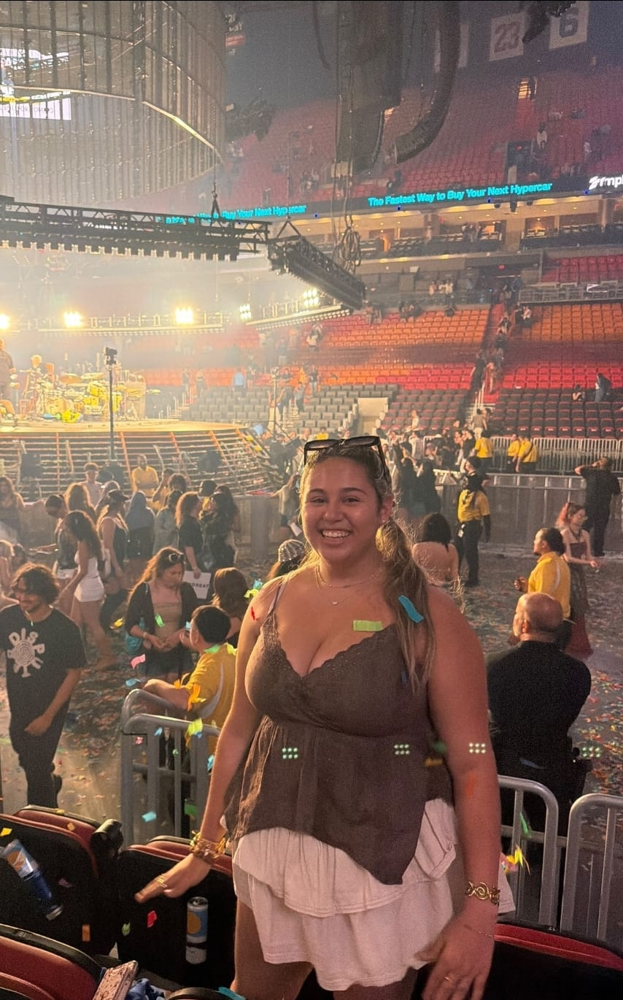
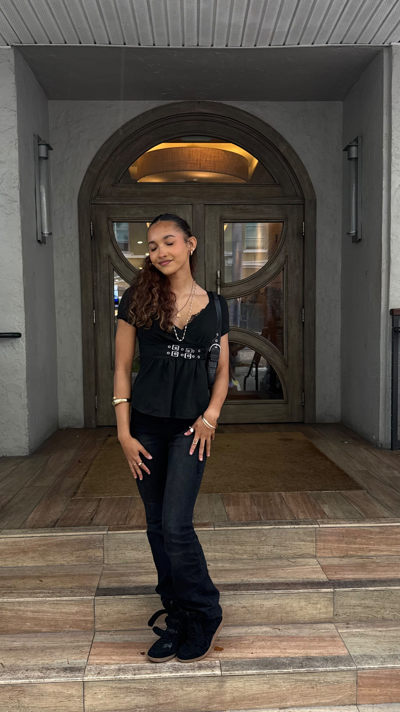

OUR LEADERSHIP
Our NTHS leadership team works together to create meaningful experiences for members whule promoting leadership, technical achievement, and career readiness.
MEET THE TEAM
Meet the students who help lead our chapter, support our members, and build opportunities for our CTE community.
OUR LEADERSHIP
Our NTHS leadership team works together to create meaningful experiences for members whule promoting leadership, technical achievement, and career readiness.

CO-PRESIDENT
Hi, Im Isabelle! I have 2 business certifications and am working towards my PMI. I love working with animals and I hope to encourage more participation in our CCHS CTE programs!!
Fun Fact: Ive done baton twirling since I was 8.
CO-PRESIDENT
Introduction about this member goes here. This can include their CTE program, intrests, goals, and what they hope to accomplish through NTHS.
Fun Fact:

VICE PRESIDENT
Hi, I'm Kyra! I am in the automotive CTE track and I have all 9 of my ASE Certifications. I love all things cars and I hope that this first year of NTHS will be as successful as ever and we can make so many memories together!
Fun Fact: I am on Varsity Cheer!
SECRETARY
Hello! My name is Avi Diamond, and I am the secretary. I have taken a bunch of tracks, and certified in all of them, meaning I have an HTML and CSS, DECA, Premiere Pro, and 2 Cybersecurity Certifications. I hope this year we will be able to help people learn about different tracks they might not have thought about before.
Fun Fact: I love to 3D print things for my friends and family.
TREASURER
Hey, I am Alana Granit and I'm the Treasurer. I hope to connect with other students, get involved in new opportunities, and help make a positive impact in our school community.
Fun Fact: I play Water Polo
Web Master
Hi, My name is Summer Bayne and I am the webmaster.
Fun Fact:
OPERATIONS DIRECTOR
Hey! My name is Cristian Mendez and I am working as NTHS Operations Director. As a background I have taken all courses in Cooper City High School's film track, concluding by even creating the introduction to my own film! I think through my experiences at the school that the CTE classes offered can be some of the most rewarding and valuable experiences throughout all four years, and through our work in NTHS I hope to encourage more people to take these courses and participate in this club which will provide great experiences and opportunities.
Fun Fact: I'm very colorblind which has made working in the film track extremely interesting!!